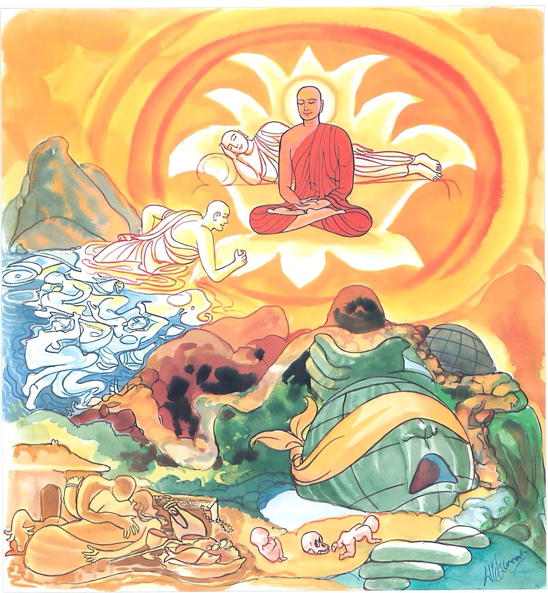

26-31 සීවලි මහාස්ථවිරයන් වහන්සේ
මෙම කතාව ධම්මපද අටුවාවෙන් ද කියවන්න.
යො ඉමං පළිපථං දුග්ගං සංසාරං මොහමච්චගා
තිණ්ණො පාරගතො ඣායී අනෙජො අකථංකථී
අනුපාදාය නිබ්බුතො තමහං බ්රූමි බ්රාහ්මණං.
යම් භික්ෂුවෙක් මේ (රාගාදි) පළිපථය (මඩ සහිත මගත් ක්ලේශදුර්ගයත් මේ සංසාර වෘත්තයත් මෝහයත්) ඉක්මැවී ද, (කාමෝඝාදි) සැඩ පහරින් එතෙර වූයේ ද, (පාරසඞ්ඛ්යාත) නිර්වාණයට පැමිණියේ ද, ධ්යාන වඩන්නේ ද, (එජාසඞ්ඛ්යාත) තෘෂ්ණාව රහිත වූයේ ද, බුද්ධාදි අෂ්ට වස්තූන් පිළිබඳ සැක නැත්තේ ද, කාමෝපාදානාදීන් (උපාදානවශයෙන්) දැඩි සේ නොගෙන ක්ලේශපරිනිර්වාණයෙන් නිවුනේ ද, ඒ වීතරාග පුද්ගලයා බ්රාහ්මණ යැ යී මම් කියමි.

සුප්පවාසා නම් කොලිය දුවනී තොමෝ එක් අවස්ථායෙක සත් අවුරුදු සත් මස් සත් දවසක් දරු ගැබ උසුලා ගෙන සත් දවසක් ම මුළා වූ දරු ගැබ් ඇතියා තියුණු වූ රළු වූ දුක් වේදනාවෙන් පෙළෙන්නට වන. එසේ දුකෙන් පෙළුනු ඕ තොමෝ “යම් උතුමෙක් මෙබඳු දුක් දුරු කිරීමට දහම් දෙසා ද, ඒ භාග්යවත් තෙමේ එකාන්තයෙන් සම්යක් සම්බුද්ධ ය, යමෙක් මෙබඳු දුක් දුරු කිරීම පිණිස පිළිපන්නේ ද ඒ භාග්යවතුන්වහන්සේගේ ශ්රාවක සඞ්ඝ තෙමේ ද එකාන්තයෙන් සුප්රතිපන්න ය, යම් තැනෙක මෙබඳු දුකෙක් නො වේ ද, ඒ මේ නිවන එකාන්තයෙන් සුඛය, යි මේ ත්රිවිධ විතර්කයෙන් දුක් ඉවසමින් තම හිමියා බුදුරජුන් වෙත යැවූ ය. ඔහු, බුදුරජුන් වෙත ගොස් “ස්වාමීනි! මා මේ බුදුරජුන් වෙත යැවූ ය. ඔහු, බුදුරජුන් වෙත ගොස් “ස්වාමීනි, මා මේ බුදුරජුන් වඳිනු සුප්පවාසාවගේ වචනයෙනැ”යි බුදුරජුන් වැඳ පසෙකට වී හුන්නේ ය. එකල්හි බුදුරජානන් වහන්සේ “සුප්පවාසා තොමෝ සුව ඇතියා වේවා, සුව ඇතියා නීරෝග පුතු බිහි කෙරේවා”යි වදාළ ඇසිල්ලෙහි ම සුව ඇතියා නීරෝග ව හුන් පුතු බිහි කළා ය. ඉන් පසු සත් දවසක් බුද්ධ ප්රම්රඛ මහාසඞ්ඝයා වහන්සේට මහදන් දුන්නී ය. පුත් කුමරු ද උපන්දා සිට ඩබරාව ගෙණ සඞ්ඝයා වහන්සේට පැන් පෙරා පිළිගැන් වී ය. පසුකාලයෙහි ගෙන් නික්ම පැවිදි ව රහත් වූයේ ය.
දවසක් දම්සබාවට රැස් වූ භික්ෂූන් වහන්සේලා “ඇවැත්නි! බලනු මැනැවි, මේ මහණ රහත් වන්නට හේතු සම්පත් ඇති ව සිටියේ ද, මෙතෙක් කල් මවුකුස විඳි දුක ඉමහත් ය, කියනු බැරි දුකක් මවු කුසෙහි දී මොහු වින්දේ ය, කෙතරම් දුකෙක් මේ මහණහු විසින් ගෙවා දමන ලද දැ”යි කතා කරන්නට වූහ. ඒ අතර දම්සබාවට වැඩම කළ බුදුරජානන් වහන්සේ “මහණෙනි! තමුසේලා මෙහි කුමක් ගැණ කතා කරහු දැ”යි විචාරා “සුප්පවාසා පුත් මහණහු ගැණ ය”යි කී කල්හි “මහණෙනි! ඔවු, මාපුත් මේ මහත් දුකින් මිදී දැන් නිවන් ලබා සිටී ය”යි වදාරා මේ ධර්මදේශනාව කළ සේක.
යො ඉමංපළිපථං දුග්ගං සංසාරං මොහමච්චගා,
තිණ්ණො පාරගතො ඣායි අනෙජො අකථඞ්කථි,
අනුපාදාය නිබ්බුතො තමහං බ්රෑමි බ්රාහ්මණන්ති.
යමෙක් මේ මඩ සහිත මග ද දුර්ගය ද සසර ද මොහය ද ඉක්මවා ගියේ ද එතෙර වූයේ ද පරතෙරට ගියේ ද ධ්යාන කරන්නේ ද තෘෂ්ණා නැත්තේ ද කිසිවක් දැඩි ව නො ගෙණ නිවුනේ ද ඔහු, මම බමුණු යි කියමි.
යො ඉමං පළිපථං දුග්ගං සංසාරං මොහං අච්චගා = යමෙක් මේ මඩ සහිත දුර්ගයත් සසරත් මොහයත් ඉක්මවා ගියේ ද.
ගොහොරු මඩ සහිත මග ‘පළිපථ’ යි කියනු ලැබේ. පළිපපථ යන මෙහි මැද සිටි පකාරටය නිරුක්ත විධියෙන් ලොප් ව ගොස් ‘පළිපථ’ යි සිටියේ ය. නො යා හැකි තැන් දුග්ග. [1] චුතිපට්සන්ධි වශයෙන් ස්කන්ධාදීන්ගේ පැවැත් ම සංසාර. [2] සිවු සස් දහම් දැනීමට ඉඩ නො දෙන මග අවුරණ සත්ත්වයන් අරමුණෙහි ලා මුළා කරණ ශක්තිය මොහ. [3]
අච්චගා = ‘ඉක්මවා ගියේ’ යන අරුත්. ‘අගා’ යනු හා එක් ව සිටි ‘අති’ යනු උපසර්ග යි. එය, අතිශය - භෘශ - වික්රාන්ත - අතික්රමණ - වෘද්ධි යන අරුත්හි එන්නේ ය. මෙහි අතික්රමණාර්ත්ථයෙහි නැගී සිටියේ ය.
තිණ්ණො පාරගතො ඣායී අනෙජො අකථඞ්කථි = එතෙර වූයේ පරතෙරට ගියේ ධ්යාන කරන්නේ තෘෂ්ණා නැත්තේ සැක නැත්තේ.
කාමොඝාදිචතුර්විධ ඔඝයෙන් එතෙර වූයේ තිණ්ණ. [4] නිවන් නැමැති පරතෙරට ගියේ පාරගත. [5] ආලම්බනොපනිද්ධ්යානලක්ෂනොපනිද්ධ්යාන යන දෙවැදෑරුම් ධ්යානයෙන් ධ්යාන කරණුයේ ඣායී. [6] ‘එජා’ යි තෘෂ්ණාවට නමෙකි. සත්ත්වයන් ඒ ඒ භවයෙහි උපතට ඇදලන බැවින් හා සත්ත්වයන් අරමුණෙහි කම්පිත කරණ බැවිනි. ඒ තෘෂ්ණාසඞ්ඛ්යාතඑජාව මුළුමනින් නසා සිටියේ අනෙජ. බුද්ධාදී වූ අට තැන කෙසේ කෙසේ දැයි පැවති සැක නැතයේ අකථඞ්කථි. [7]
අනුපාදාය නිබ්බුතො තං අහං බ්රෑමි බ්රාහ්මණං = (යමෙක්) කිසිවක් දැඩිව නො ගෙණ නිවුනේ (ද) ඔහු, බමුණු යි කියමි.
කාම - දිට්ඨි - සීලබ්බත - අත්තවාද යන උපාදානයන්, දැඩි ව ගැණුම්, මුළුමනින් නසා ලූ බැවින් කිසිම සංස්කාරයක් ‘මම ය, මාගේය’යි නො ගෙණ ක්ලේශ පරිනිර්වාණයෙන් පිරිනිවියේ අනුපාදායනිබ්බුත. [8]
දැඩි ව ගැණීම ‘උපාදාන’ නම්. රූප - ශබ්දා දී අරමුණු දැඩි ව ගැණීම් වශයෙන් එහි රස විඳීම කළ බලවත් වූ තෘස්ණාව කාමූපාදානය යි.
පින් පව් දෙක්හි ඵලවිපාක නැත, මහායාගාදියෙහි ඵලවිපාක නැත, අමතා දීමෙහි ඵලවිපාක නැත, යනාදීන් විසින් ගත් දැඩි ගැණීම දිට්ඨුපාදානය යි.
ශීලයෙන් ශුද්ධිය වේ, ව්රතයෙන් ශුද්ධිය වේ, ශීල ව්රතයෙන් ශුද්ධිය වේ,යි දැඩිය ගැණීම සීලබ්බතූපාදානය යි.
රූපය ආත්ම වශයෙන් බලයි, ආත්මය රූපවත් ය යි බලයි, ආත්මයෙහි රූපය පිහිටියේ ය යි බලයි, රූපයෙහි හෝ ආත්මය වේ ය යි බලයි, යනාදී ලෙසින් දැඩිව ගැණීම අත්තවාදූපාදාන ය යි. යට කියන ලද්දේ ය. මෙ කියූ උපාදානයන් මුළුමනින් නසාලූයේ ‘අනුපාදායනිබ්බුත’ නම් වේ.
යහෙක් රාගාදී කෙලෙස් මඩ සහිත වූ මාර්ගය ද, කෙලෙස් නැමැති දුර්ගය ද ස්කන්ධදාතු ආයතනයන්ගේ පටිපාටිය යි කියූ සංසාරය ද සත්ත්වයන් අරමුණෙහි මුළා කරන්නා වූ මෝහය ද ඉක්මවා ගියේ ද, චතුරොඝයෙන් එතෙර වූයේ ද, නිවනට පැමිණියේ ද, ධ්යාන කරන්නේ ද, තෘෂ්ණා රහිත වූයේ ද, සැක නැත්තේ ද, උපාදාන විසින් ‘මම ය, මාගේ ය’ යි නො ගෙණ කෙලෙස් පිරිනිවීමෙන් පිරිනිවියේ ද, ඔහු බ්රාහ්මණ නම් වන්නේ ය.
ධර්මදේශනාවගේ අවසානයෙහි බොහෝ දෙන සෝවන්ඵලාදියට පැමිණියාහු ය.
සීවලීස්ථවිර වස්තුව නිමි.